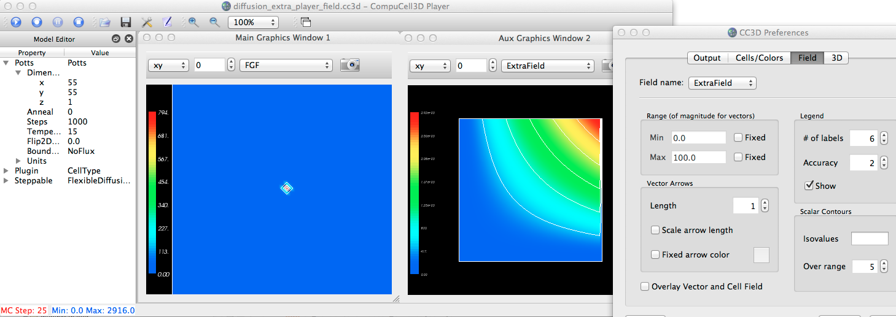

Showing one of the scalar fields (FGF) with 5 contours, uniformly spaced over the range of the field (shown in lower-left of player window).

Adding a new window and showing the other scalar field (ExtraField), also with 5 contours, uniformly spaced over its range. Notice that this field's range is now displayed in the lower-left of the player.
After changing the # of contours over range to be 3 for the ExtraField, changing the color of Contours (Prefs:Cells/Colors tab) to be black, and zooming in on the contours of FGF.